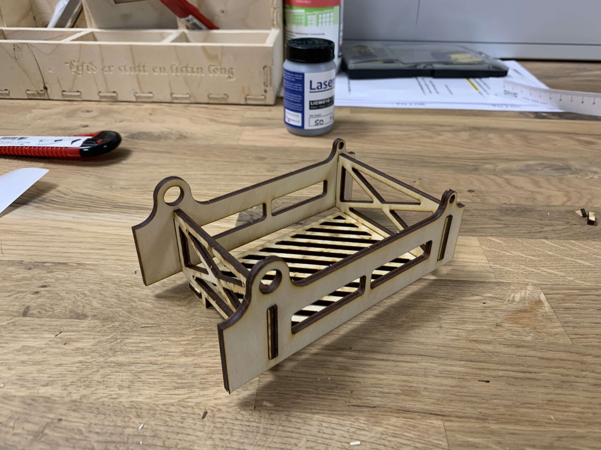
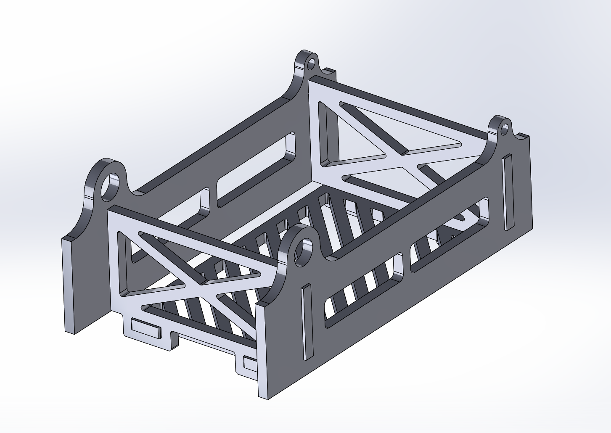

Verkefni III - 3D prentun og skönnun (í vinnslu)
1. hluti - Prentaraprófun
Framkvæmt var prentunarpróf í Fab Lab...
2. hluti - 3D prentun
Hönnuð var mótorfesting úr plasti til að passa inn í koltrefjastöng fyrir dróna. Svavar í 3D prentun var fenginn til þess að prenta...
3. hluti - 3D skönnun
Notað var appið Qlone til að skanna inn smástyttu. Byrjað var á því að prenta blað skaffað af Qlone til að nota sem nokkurs konar bakgrunn fyrir skönnunina. Stytta var valin til að skanna inn og leiðbeiningum forritsins fylgt. Útkoman var ansi nákvæm. Sjá gif að neðan...